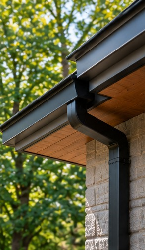

Exteriors / Renovation Journal
Exterior Renovations That Respect the House
Coordinate siding, trim, entry details, and drainage as one system.
Retrospective topic: May 2024 · Oakwaters Journal

A successful exterior renovations that respect the house project begins with decisions that affect how the home works, not just how it looks. For homeowners in Ontario, the best results come from checking existing conditions, coordinating the relevant trades and making selections before work reaches the point where changes become expensive.
Read the original architecture
Identify the roof shape, window proportions, entry sequence and materials that give the house its character. A new cladding colour cannot compensate for trim dimensions or window placements that conflict with the building.
Before requesting prices, ask the contractor to explain how this part of the work will be assessed and what assumptions the estimate makes. Request photographs or a sketch when an important condition will be hidden after installation. A clear record helps distinguish an agreed scope from an unforeseen condition.
Inspect before covering
Look for deteriorated sheathing, failed flashing, rot and drainage problems. Removing old siding may expose conditions that affect scope and cost. Budget for a contingency rather than assuming every wall is sound.
Compare at least two realistic approaches using the same criteria: installation requirements, durability, maintenance and impact on adjacent work. A lower material price may not mean a lower installed cost. Ask which decisions must be finalized before products can be ordered.
Keep the water-control layers continuous
Roof-to-wall junctions, window openings and deck connections need coordinated flashing and weather-resistive detailing. Ask how each trade will connect its work to the next. Decorative trim must not interrupt the drainage plane.
Walk through the proposed layout at full scale if possible. Tape dimensions on the floor or wall, check the position of existing services and test everyday movement. This simple exercise often reveals conflicts that are difficult to notice in a small drawing.
Choose materials in context
Compare siding profiles, stone accents, soffits and metalwork on the actual elevation. View physical colour samples in daylight and shade. Durable, compatible materials usually age better than a collection of competing textures.
Confirm the sequence with the people doing the work. One trade may need to complete concealed preparation before another can install visible finishes. Record who supplies each item and who checks dimensions, because missing handoffs can cause delays and rework.
Sequence the work carefully
Windows, insulation, exterior lighting and cladding are interdependent. Resolve opening sizes and penetrations before finishing walls. Check local requirements for structural changes and keep photos of hidden work.
At the final walkthrough, compare the completed work with the approved scope and product specifications. Ask for operating instructions, maintenance guidance and warranty documents where applicable. Photograph finished details and retain invoices and approvals for future reference.
Questions to ask before work begins
- Which existing conditions must be inspected before we commit to the exterior renovations that respect the house scope?
- Which selections and dimensions must be confirmed before ordering?
- What work is excluded from the estimate, and how will changes be approved?
- Are any municipal permits, inspections or licensed trades required for this specific scope?
- How will completed work be inspected and documented?
A clear written scope, realistic sequencing and decisions made early are more valuable than rushing into demolition. If you are considering a renovation in the Guelph area, Oakwaters Construction can discuss the practical next steps for your home.
Planning a renovation?
Explore what is possible for your home with Oakwaters Construction.
Discuss Your Project → A Practical Guide to Renovation Budgets
A Practical Guide to Renovation Budgets